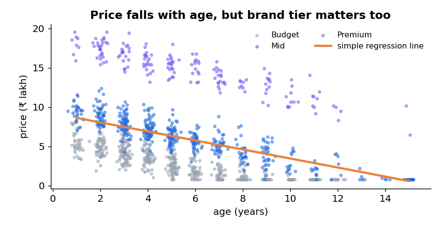
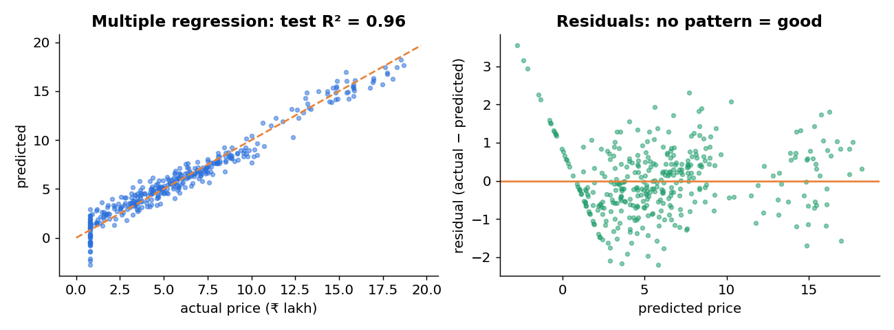
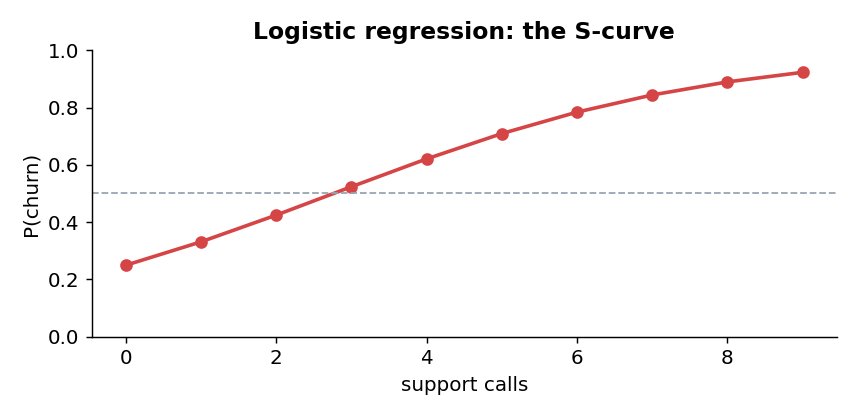
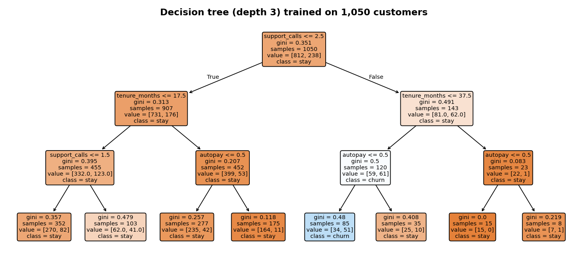
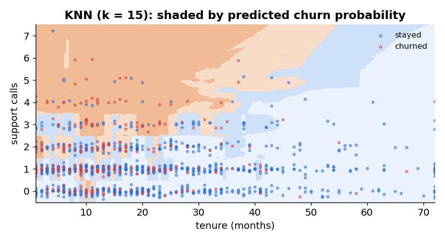
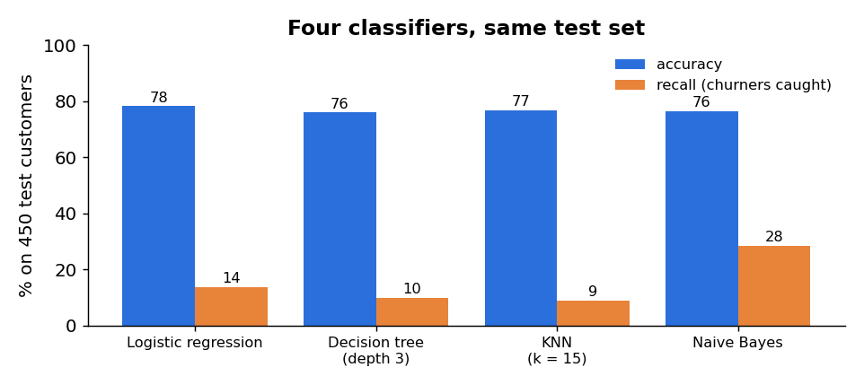

Regression vs classification
All models in this unit are supervised learning: they learn from past examples where the answer (the target or label) is known, then predict it for new cases. What kind of target you have decides the family of model.
| Regression | Classification | |
|---|---|---|
| Target | a number (continuous) | a category (often yes/no) |
| Question | How much? How many? | Which group? Will it happen? |
| Output | ₹10.42 lakh | “churn” with probability 0.71 |
| Models here | simple and multiple linear regression | logistic regression, decision tree, KNN, Naïve Bayes |
| Judged by | R², RMSE, MAE | accuracy, precision, recall (more in Unit 4) |
| Examples | house rent, sales next month, delivery time, crop yield | spam or not, loan default, disease present, churn |
Simple linear regression
x̄ = 3, ȳ = 6.38
b = Σ(x − x̄)(y − ȳ) / Σ(x − x̄)² = −7.90 / 10 = −0.79a = ȳ − b·x̄ = 6.38 + 0.79 × 3 = 8.75Line: price = 8.75 − 0.79 × age. Every extra year costs ₹0.79 lakh.
SSE = Σ(y − ŷ)² = 0.067 · SST = Σ(y − ȳ)² = 6.308 · R² = 1 − 0.067/6.308 = 0.989
Reading the numbers
- Slope b: change in y for each +1 in x. Negative here: older cars are cheaper.
- Intercept a: predicted y when x = 0. Sometimes meaningful (a new car), sometimes not.
- Residual y − ŷ: how far one point is from the line.
- R²: the share of the variation in y that the line explains (0 = nothing, 1 = everything).
On the real data: 1,200 used cars
cars = pd.read_csv("used_cars.csv")
train, test = train_test_split(cars, test_size=0.3, random_state=42)
simple = LinearRegression().fit(train[["age_years"]], train["price_lakh"])
pred = simple.predict(test[["age_years"]])
price = 9.202 + (-0.574) x age test R2 0.142 RMSE 4.095 MAE 2.995

On the five hand-picked cars, R² was 0.989. On 360 real test cars it is only 0.142, with typical errors of ₹3–4 lakh. The chart shows why: at any age, Premium cars (violet) sit far above Budget cars (grey). Age matters, but it is not the main story.
The cure is to give the model more information: multiple regression.
Multiple linear regression
Categories become dummy variables
A regression needs numbers, so brand tier (Budget / Mid / Premium) becomes two 0/1 columns, tier_Mid and tier_Premium. Budget is the baseline: a Budget car has both set to 0. We always leave one category out (Unit 2’s dummy-variable trap). The same is done for fuel, with Petrol as the baseline.
def features(d):
X = pd.DataFrame({"age_years": d["age_years"], "km_thousand": d["km_driven"] / 1000, "owners": d["owners"]})
X = X.join(pd.get_dummies(d["brand_tier"], prefix="tier", dtype=int).drop(columns="tier_Budget", errors="ignore"))
X = X.join(pd.get_dummies(d["fuel"], prefix="fuel", dtype=int).drop(columns="fuel_Petrol", errors="ignore"))
X["automatic"] = (d["transmission"] == "Automatic").astype(int)
return X
multi = LinearRegression().fit(features(train), train["price_lakh"])
intercept 5.993 age_years -0.4620 km_thousand -0.0074 owners -0.3102 tier_Mid +3.1249 tier_Premium +11.4286 fuel_CNG -0.0555 fuel_Diesel +0.6935 fuel_Electric +2.5140 automatic +0.9878 train R2 0.957 adjusted R2 0.956 test R2 0.960 RMSE 0.885 MAE 0.697
| Coefficient | Plain-language meaning (everything else the same) |
|---|---|
| age_years −0.462 | Each extra year of age lowers the price by ₹0.46 lakh |
| km_thousand −0.0074 | Every 1,000 km lowers it by ₹740, so 1,00,000 km costs about ₹0.74 lakh |
| owners −0.310 | Each previous owner lowers it by ₹0.31 lakh |
| tier_Premium +11.43 | A Premium car is worth ₹11.43 lakh more than an otherwise identical Budget car |
| fuel_Electric +2.51 | Electric is worth ₹2.51 lakh more than Petrol; CNG (−0.06) is about the same as Petrol |
| automatic +0.99 | An automatic gearbox adds about ₹1 lakh |
5.993 − 0.462×12 − 0.0074×162 − 0.310×4 + 11.429 + 0.988 = 10.42 → predicted ₹10.42 lakh, ₹0.42 lakh off.
Judging a regression
| Measure | Formula | Car model (test) | Read it as |
|---|---|---|---|
| R² | 1 − SSE/SST | 0.960 | 96% of price variation explained |
| Adjusted R² | 1 − (1 − R²)(n − 1)/(n − k − 1) | 0.956 (train, n = 840, k = 9) | R² with a penalty for each extra feature |
| RMSE | √(Σ(y − ŷ)² / n) | ₹0.885 lakh | typical error; big misses count extra |
| MAE | Σ|y − ŷ| / n | ₹0.697 lakh | average absolute error |
Plain R² can only go up when you add features, even useless ones. Adjusted R² goes down if a new feature does not earn its place, so use it to compare models with different numbers of features.

Assumptions behind linear regression
| Assumption | Meaning | How to check | If broken |
|---|---|---|---|
| Linearity | effects add up in straight lines | residual plot shows no curve | transform (log), add terms |
| Independence | errors don’t depend on each other | think about how data was collected | time-series models |
| Equal variance | errors have the same spread everywhere | no funnel shape in residuals | log the target |
| Normal residuals | errors roughly bell-shaped | histogram of residuals | matters most for p-values |
| No multicollinearity | predictors not near-copies | correlations, VIF | drop one of the pair (Unit 2) |
Logistic regression
Could we fit a straight line to churn (0 or 1)? The line would predict values like −0.2 or 1.3, which are impossible as probabilities. Logistic regression solves this: it models the log-odds as a straight line, then squashes the result into 0–1 with the sigmoid function.
log(p / (1 − p)) = b₀ + b₁x₁ + … + bₖxₖ = zp = 1 / (1 + e−z)Each coefficient changes the log-odds. Its exponent eb is the odds ratio: how the odds are multiplied when that feature rises by 1.

Logistic regression: coefficient and odds ratio e^b tenure_months b = -0.0350 odds ratio = 0.966 monthly_charge b = +0.0012 odds ratio = 1.001 support_calls b = +0.3986 odds ratio = 1.490 prepaid b = +0.6345 odds ratio = 1.886 autopay b = -0.5841 odds ratio = 0.558 satisfaction b = -0.2428 odds ratio = 0.784
| Odds ratio | Interpretation |
|---|---|
| support_calls 1.490 | Each extra support call multiplies the odds of churning by 1.49 (+49%) |
| prepaid 1.886 | Prepaid customers have 1.89 times the odds of a postpaid customer with the same other values |
| autopay 0.558 | Autopay lowers the odds by 44% (×0.558) |
| tenure 0.966 | Each month with SwiftTel lowers the odds by 3.4%; over a year: 0.966¹² ≈ 0.66 |
Decision tree
A decision tree asks a sequence of yes/no questions: “support calls ≤ 2.5?”, “tenure ≤ 17.5?”. Each question splits the customers into purer groups. To choose a question, the tree tries every feature and every threshold, and keeps the split that most reduces impurity.
Gini = 1 − Σ pᵢ² (0 = pure, 0.5 = a 50/50 mix for two classes)Root: 238 churners of 1,050 → p = 0.227 → 1 − (0.227² + 0.773²) = 0.351
Split “support_calls ≤ 2.5”: left 907 customers (Gini 0.313), right 143 (Gini 0.491)
Weighted Gini = (907 × 0.313 + 143 × 0.491) / 1050 = 0.337 → impurity drops by 0.014. No other split does better, so it becomes the root.
Entropy −Σ pᵢ log₂ pᵢ is an alternative measure (ID3 and C4.5 use it).
| Algorithm | Split criterion | Notes |
|---|---|---|
| CART | Gini (or variance for regression trees) | always binary splits; scikit-learn, SPSS “CRT” |
| ID3 / C4.5 | information gain (ratio) from entropy | classic textbook algorithms |
| CHAID | chi-square test | multi-way splits; SPSS default |

- 3+ calls, tenure ≤ 37, no autopay: 51 of 85 churned (60%): call them first.
- ≤ 2 calls, tenure > 17, autopay: 11 of 175 (6%): leave them alone.
- Feature importance: tenure 0.43, support calls 0.42, autopay 0.15; price, plan and satisfaction were never used.
| ✔ Strengths | ✘ Weaknesses |
|---|---|
| readable if/then rules | deep trees memorise noise (overfit) |
| no scaling needed | unstable: small data changes → new tree |
| captures interactions automatically | predictions are step-shaped |
| numbers and categories together | greedy: best split now, not best tree |
Controls against overfitting: max_depth, min_samples_leaf, min_samples_split and pruning (cutting back branches that don’t help on validation data). Unit 4’s random forests combine many trees to fix the instability.
K-nearest neighbours (KNN)
KNN has almost no training: it simply stores the training data. To classify a new customer it (1) measures the distance to every stored customer, (2) picks the k closest, and (3) lets them vote. The share of churners among the k neighbours is the predicted probability.
d(p, q) = √((p₁ − q₁)² + (p₂ − q₂)² + …)New customer (tenure 6, calls 3) vs A (5, 3): √(1² + 0²) = 1.00
vs B (8, 2): √(2² + 1²) = 2.24 · vs D (30, 0): √(24² + 3²) = 24.2
With k = 3, the three nearest vote. If two of them churned, P(churn) = 2/3.
| k | train accuracy | test accuracy | What happens |
|---|---|---|---|
| 1 | 0.984 | 0.698 | copies the single nearest point: memorises noise |
| 5 | 0.829 | 0.742 | |
| 15 | 0.787 | 0.767 | a good balance |
| 51 | 0.781 | 0.773 | so smooth it nearly always says “No” |

Naïve Bayes
Churn: 0.227 × (83/340) × (240/340) × (259/340) × (173/340) = 0.227 × 0.244 × 0.706 × 0.762 × 0.509 = 0.01514
Stay: 0.773 × (119/1160) × (694/1160) × (699/1160) × (374/1160) = 0.773 × 0.103 × 0.598 × 0.603 × 0.322 = 0.00922
Normalise: P(churn | evidence) = 0.01514 / (0.01514 + 0.00922) = 0.621.
Reality check: 50 customers match all four conditions, and 64% of them churned. A good estimate from simple counting.
| Variant | Features | Typical use |
|---|---|---|
| Gaussian NB | numbers, assumed bell-shaped within each class | our lab model on SwiftTel |
| Multinomial NB | counts (words in a document) | spam filters, text classification |
| Bernoulli NB | yes/no features | the hand calculation above |
Strengths: extremely fast, works with little data, handles many features (text). Weakness: features are rarely truly independent (support calls and satisfaction are correlated, r = −0.31), so evidence gets counted twice and probabilities become over-confident. For the new customer in the lab, Gaussian NB says 0.936 while the other three models say 0.60–0.73. Use NB’s ranking, and be careful with its exact probabilities.
The model-building process, and training/testing datasets
| # | Step | SwiftTel churn |
|---|---|---|
| 1 | Define the target and how success is measured | churned (Yes/No); catch leavers for the retention team |
| 2 | Choose candidate features | tenure, charge, support calls, prepaid, autopay, satisfaction (Unit 2’s selection) |
| 3 | Split into training and test sets | 1,050 / 450, stratified, random_state = 42 |
| 4 | Fit preprocessing on training data only | satisfaction median = 4.0; scaler mean and sd for KNN |
| 5 | Train candidate models | logistic, tree, KNN, Naïve Bayes |
| 6 | Tune hyperparameters on validation data | tree depth, k (Unit 4: cross-validation) |
| 7 | Evaluate once on the test set | accuracy, precision, recall |
| 8 | Interpret, document, deploy, monitor | odds ratios, tree rules (Unit 5) |
X_train, X_test, y_train, y_test = train_test_split(X, y, test_size=0.3, random_state=42, stratify=y)
median_sat = X_train["satisfaction"].median() # learned from TRAINING data only
X_train = X_train.fillna({"satisfaction": median_sat})
X_test = X_test.fillna({"satisfaction": median_sat})
scaler = StandardScaler().fit(X_train) # also fitted on training data only
train 1050 customers (22.7% churn) test 450 (22.7% churn)
| Idea | What it means | Why it matters |
|---|---|---|
| Training set | data the model learns from (here 70%) | all fitting happens here |
| Test set | data held back until the very end (30%) | an honest estimate of performance on new customers |
| Validation set | a third part (e.g. 60/20/20) for choosing settings | keeps the test set untouched while tuning |
| Stratification | keep the class share equal in each part | with 22.7% churners, a random split could give 19% / 31% |
| random_state | fixes the random shuffle | anyone can reproduce your exact numbers |
| Time-based split | train on the past, test on the future | for forecasting; never let the model “see the future” |
- Preprocessing leakage: scaling or imputing with statistics from ALL rows lets test data shape the training.
- Target leakage: a feature only known after the outcome, e.g. “cancellation_reason” or “final_bill_date”: perfect in testing, useless in real life.
- Duplicate leakage: the same customer in train and test (Unit 2’s duplicates!).
pd.get_dummies only creates columns for the categories present in that row, so the model received the wrong columns. The fix: build features with a fixed list of columns (reindex(columns=..., fill_value=0)), or use scikit-learn’s OneHotEncoder fitted on training data. Unit 5 returns to this: preprocessing must be saved together with the model.Comparing the four classifiers
Logistic regression accuracy 0.782 precision 0.583 recall 0.137 Decision tree (depth 3) accuracy 0.760 precision 0.385 recall 0.098 KNN (k = 15, scaled) accuracy 0.767 precision 0.429 recall 0.088 Naive Bayes (Gaussian) accuracy 0.764 precision 0.468 recall 0.284 Always predict No accuracy 0.773

Precision = of the customers a model flags as churners, how many really churned. Recall = of the customers who really churned, how many the model flagged.
All four models hover around the 77.3% “always No” accuracy and catch only 9–28% of churners. That does not mean they are useless: Unit 1 showed the logistic model’s top 10% has a lift of 2.16. The problem is the default 0.5 cut-off: with only 22.7% churners, few customers ever reach 50%. Unit 4 moves the threshold and uses better metrics.
| Logistic regression | Decision tree | KNN | Naïve Bayes | |
|---|---|---|---|---|
| Learns | a weight per feature | if/then splits | nothing (stores data) | class-conditional probabilities |
| Explain it? | ✔ odds ratios | ✔✔ rules | ✘ “your neighbours” | ~ per-feature evidence |
| Needs scaling? | if regularised | no | yes | no |
| Speed to predict | very fast | very fast | slow on big data | very fast |
| Main risk | misses curved patterns | overfitting | bad k, unscaled data | over-confident probabilities |
| Good first choice for | baseline; regulated decisions | rule-based policies | small, low-dimensional data | text, many features, little data |
Hands-on lab
Parts A–D run in this page on the real data. Part E is the full lab in Python, R and SPSS.
Part A · Beat least squares: fit the line yourself
40 Mid-tier cars. Move the sliders to make the sum of squared errors (SSE) as small as you can, then press “Least squares”.
Part B · Car price predictor (multiple regression)
Part C · KNN playground
All 1,500 SwiftTel customers by tenure and support calls (scaled). Click anywhere to place a new customer.
Part D · Follow the decision tree
Your tasks
Check your answers
1. The least-squares line (a = 10.082, b = −0.704) has SSE 49.59 and R² 0.794. By definition it is the line with the smallest possible SSE: calculus sets the derivatives of SSE with respect to a and b to zero, which gives exactly the formulas for a and b. 2. The base car comes to ₹6.05 lakh. Changing only the fuel to Electric adds the fuel_Electric coefficient (+2.51) → ₹8.56 lakh. Changing only the tier to Premium swaps tier_Mid (+3.12) for tier_Premium (+11.43), a difference of 8.30 → ₹14.35 lakh. 3. Yes: a 15-year-old Budget petrol manual with 2,40,000 km and 4 owners comes out at −₹3.97 lakh. A straight line keeps falling forever, but real prices have a floor (no car in the data sold below ₹0.8 lakh). Linear models can give nonsense when you extrapolate to unusual combinations. 4. At k = 1 the answer is all-or-nothing: 100% for (6 months, 4 calls), 0% for (60 months, 0 calls), decided by one neighbour. At k = 15 they become 47% and 7%; at k = 61, 52% and 3%. Larger k gives smoother, steadier estimates. Notice the first customer sits right on the decision boundary: predicted STAY at k = 15 but CHURN at k = 61. Choosing k changes decisions, which is why Unit 4 tunes it with cross-validation. 5. Support calls > 2.5 AND tenure ≤ 37.5 AND no autopay: 51 of 85 training customers churned (60%). 6. Unticking “3+ support calls” changes the probability most (62.1% → 40.8%). Its likelihood ratio, 0.244 ÷ 0.103 ≈ 2.4, is the largest of the four, consistent with support calls having one of the strongest effects in the logistic model (odds × 1.49 per call).
Part E · The same lab in Python, R and SPSS
Used cars (CSV)
used_cars.csv · 1,200 listings
SwiftTel (CSV)
swifttel_customers.csv · 1,500 customers
Jupyter notebook
7 parts: regression → 4 classifiers
Python script
python unit3_lab.py
R script
lm, glm, rpart, class::knn
SPSS · Lab Experiments 5, 6, 7 and 8
| Experiment | Menu path | What to look at |
|---|---|---|
| 5 · Linear regression | Analyze → Regression → Linear; Dependent: price_lakh; Independent: age_years | Coefficients table (B for constant and age), Model Summary (R²) |
| 6 · Multiple regression | Same dialog with age_years, km_driven, owners and dummy variables (create with Transform → Create Dummy Variables) | R², adjusted R², each B and its Sig. value; Statistics → Collinearity diagnostics (VIF) |
| 7 · Logistic regression | Analyze → Regression → Binary Logistic; Dependent: churned; Covariates: tenure, charge, calls, plan, autopay, satisfaction; mark categorical ones with “Categorical…” | Variables in the Equation: B and Exp(B) (= odds ratio); Classification Table (cut value 0.5) |
| 8 · Decision tree | Analyze → Classify → Tree; Growing Method: CRT (CART); Criteria → maximum depth 3 | The tree diagram, risk estimate, classification table; compare with CHAID |
SPSS uses all rows unless you split the file yourself, so its numbers will differ slightly from the 70/30 Python results. The patterns (signs, odds ratios, first split) should match.
city to the car model as dummy variables. Does adjusted R² go up or down? Explain what that says about whether city affects used-car prices in this dataset.Summary and revision
| Topic | Remember this |
|---|---|
| Regression vs classification | Number vs category; both supervised; logistic regression is a classifier |
| Simple linear regression | ŷ = a + bx; b = Σ(x−x̄)(y−ȳ)/Σ(x−x̄)²; a = ȳ − bx̄; minimises SSE |
| Multiple regression | Coefficient = effect with others held constant; dummies with a baseline; R² 0.14 → 0.96 with more features |
| Regression metrics | R² = 1 − SSE/SST; adjusted R² penalises extra features; RMSE and MAE in target units; check residuals |
| Logistic regression | Log-odds linear; p = 1/(1+e−z); odds ratio eb (calls 1.49, autopay 0.56) |
| Decision tree | Gini 1 − Σp² or entropy; greedy best split; readable rules; control depth to avoid overfitting |
| KNN | Distances to stored data; vote of k neighbours; scale first; small k overfits, large k underfits |
| Naïve Bayes | P(C)·ΠP(eᵢ|C), features independent given the class; fast; probabilities over-confident |
| Process | Target → features → split → preprocess on train → train → tune → test once → deploy; avoid leakage |